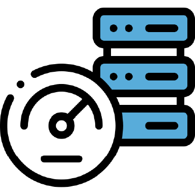

-
 인공지능
ARTFICIAL INTELLIGENCE
인공지능
ARTFICIAL INTELLIGENCE
-
 빅데이터 분석
BIG DATA ANALYTICS
빅데이터 분석
BIG DATA ANALYTICS
- 애플리케이션 모니터링 APPLICATION MONITORING
-  인프라 모니터링 INFRA MONITORING
OVERVIEW
인공지능, 빅데이터 분석, 시스템 모니터링 분야의 전문가로 구성된 전문성과 신뢰성을 겸비한 솔루션 전문 회사입니다.
AIArtficial Intelligence
노웨어소프트에서 연구 개발중인 AI 플랫폼은 정형 및 비정형 소스의 방대한 데이터를 처리합니다.
데이터 수집부터 AI분석까지 복잡한 머신러닝 프로세스를 자동화하여 다양한 환경과 비전문가도 사용 가능한 인공지능 플랫폼을 연구개발 진행중입니다.
- 분석할 데이터 및 문제 정의에 적합한 데이터 특징인지 기술
- 인지한 데이터 특징을 기반으로 분석모델 자동 탐색기술
- 목적에 따른 최적의 모델을 제공하는 분석모델 추천 자동화 기술
- 사용자 분석 목적/의도에 딸른 추천 사유/근거를 제시하는 기술
- 데이터 분석모델 자동 추천기술 검증
BIG DATAANALYTICS
대용량의 다양한 데이터를 빠르고 경제적으로 분석할 수 있도록 설계하였습니다.
노웨어소프트의 데이터 분석 서비스는 품질관리와 기계학습에 중점을 두어 연구개발 되었습니다.
비전문가도 손쉽게 빅데이터를 분석 및 활용할 수 있도록 데이터의 특징과 분석 목적·의도에 근거하여 분석모델을 자동 수립할 수 있는 빅데이터 분석 모델 추천 자동화 기술 개발을 진행하고 있습니다.
통합 빅데이터 분석 시스템은 하둡 에코시스템과 결합하여 정형과 비정형의 이종간 데이터 결합분석, 빅데이터 처리기술의 확장,
산업특성을 이해하는 데이터 분석기술 등을 통합 제공하며, 생성된 데이터의 수집부터 분석 및 관리까지, 빅데이터 분석의 전 생명주기를 체계적으로 관리할 수 있습니다.
- 빅데이터 분석 레이어
- 비정형 텍스트를 분석 / 데이터를 추출 / 분석 결과 DB 저장
- 대용량 로그 파일 분석 / 콘텐츠 분석
- 빅데이터 처리 / 저장 레이어
- 정의된 분석 작업 수행 / 원본 데이터 및 분석 결과 저장
- 통계 / 분석 / 마이닝 레이어
- 통계 분석 결과
SYSTEMMONITORING
인공지능, 데이터 보안, 시스템 관제 분야의 전문가로 구성된 전문성과 신뢰성을 겸비한 솔루션 전문 회사입니다.
IT 인프라의 모든 레이어와 모든 티어를 모니터링 할 수 있으며, 애플리케이션, 사용자 경험, 물리적 또는 서버 / 네트워크 / 스토리지 등으로 구성된 가상화 환경의 서비스 가용성 또는 비즈니스 생산성에 대한 통찰력을 높일 수 있습니다. 통합 단일 모니터링 솔루션으로 전체 인프라를 모니터링 합니다.
하나의 모니터링으로 모든 IT를 관리할 수 있습니다.
- 애플리케이션 성능 모니터링 (APM)
- 코드 레벨까지 상세한 문제점 해결 / Java, .NET 애플리케이션 지원
- 엔터프라이즈 애플리케이션 Monitoring
- DBMS, TP-Monitor, ERP 등 엔터프라이즈급 애플리케이션 모니터링
- VDI Monitoring
- Citrix, VMWare 등 현존하는 모든 VDI 환경과 개발 VM까지 모니터링
- 통합 모니터링
- 하나의 플랫폼으로 NMS/SMS/APM/DPM
OURSOLUTION
고객에게 더 나은 솔루션을 제공하고자 끊임없이 노력하겠습니다.
CONTACT
노웨어소프트는 성수역에서 15분 거리에 위치하고 있습니다.
주소 : (08378) 서울특별시 성동구 성수이로 66 서울숲드림타워 304호 (성수동2가 323)
전화번호 : 070-8633-8880 팩스 : 070-8668-8860
[지하철 이용시] 2호선 성수역 3번 출구 우회전 도로 100M (도보 10분 거리)
[버스 이용시] 마을버스 성동13 대림창고 앞 하차 (도보 3분 거리)
기술로 차별없는 세상을 만듭니다.
이상을 현실로 만들기 위하여 실패를 두려워 하지 않고, 언제나 변화와 혁신을 바탕으로 새로운 기술개발로 더 나은 미래를 설계하고자 합니다.
그리고 항상 고객 중심의 철학을 갖고 고객을 위한 최적화 솔루션 제공을 위해 끊임없이 노력해 나갑니다.
- 회사명 (주)노웨어소프트 (knowwheresoft Co., Ltd.)
- 대표이사 김 재 문
- 주소 서울특별시 성동구 성수이로 66, #3004 (성수동2가, 서울숲드림타워)
- 전화/팩스 070.8633.8880 / 070.8668.8860
- 설립일 2017년 03월 01일
- 사업부문 인공지능, 빅데이터 분석, 시스템 모니터링, 정보 보안
'도전', '혁신', '믿음', '윤리', '기여' 5가지 핵심가치를 기반으로
즐겁게 일하며 도전과 혁신을 즐기고 서로 배려하고 소통하는 기업문화를 지향하고 있습니다.
믿음과 전문적 지식을 바탕으로 꿈에 도전하는 세계적인 인공지능 전문기업 및 솔루션 업체로 도약
-
6월
한국지능정보사회진흥원 「인공지능학습용데이터구축 지원사업」선정
"수면장애 영상 및 음성질환 데이터 구축" 주관기관-서울대학교병원 - 5월 2021 eGISEC 전자정부 정보보호 솔루션 페어 참가
- 4월 한국첨단안전산업협회 정회원 가입
- 2월 대표이사 김재문 취임
- 3월 (주)노웨어소프트 설립 3주년
- 1월 RansomStop 조달청 나라장터 물품 등룩
- 6월 RansomStop 1.0 GS인증 획득
- 3월 (주)노웨어소프트 설립 2주년
- 1월 (주)노웨어소프트 기술연구소 설립
- 3월 (주)노웨어소프트 설립 1주년
- 3월 (주)노웨어소프트 설립